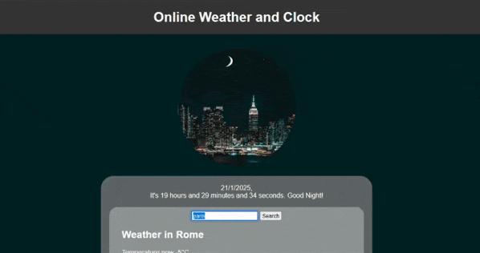
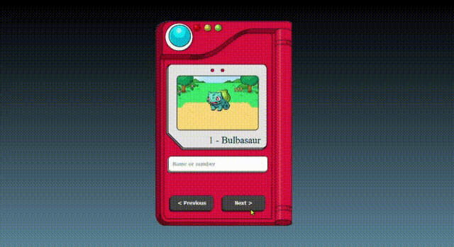

Portafolio de Jazão
Proyectos Freelance
Haz clic en el botón para explorar los proyectos freelance en los que he trabajado y otros proyectos personales que he vendido con éxito. Aquí encontrarás detalles sobre cómo transformé ideas en realidad, ayudando a los clientes y mostrando mi dedicación y habilidades creativas.
Analista de Calidad - Tester Práctico

Este fue un juego electrónico para personas con discapacidad visual hecho con el motor Unity. Fui parte del equipo de pruebas del juego, buscando errores y problemas con la dirección de audio y el volumen que guían al jugador durante el juego. El juego ya no está disponible, pero puedes ver la jugabilidad en portugués en el enlace de abajo. El juego fue producido en asociación con el gobierno del estado de São Paulo a través del PROAC.
Videos de Asfalto:
https://www.youtube.com/watch?v=LRIzo_MT2z0
https://www.youtube.com/watch?v=Ryr22ZZwKHoApp de Inventario y Stock
EN DESARROLLO: Una aplicación utilizando JavaScript y SQL para gestionar el inventario y stock del CTI de la Secretaría de Desarrollo del Estado de São Paulo, una oficina gubernamental donde trabajo. La aplicación funcionará en una IP privada, permitiendo el acceso solo a usuarios autorizados. Tiene un área de inicio de sesión y puede gestionar artículos (CRUD), así como generar e imprimir informes y cartas oficiales para transferencias de equipos.
Intranet de la Secretaría del Estado de São Paulo

Cambios Ocasionales: Durante mi trabajo como técnico, ocasionalmente recibo solicitudes para modificar detalles de apariencia. Estas tareas incluyen cambiar imágenes específicas, agregar o quitar íconos, ajustar CSS después de cambios realizados por otros y responsabilidades similares. Esencialmente, trabajo ocasionalmente en algunos ajustes de HTML y CSS.
No hay enlace para el código ni se permite el acceso a esta herramienta debido a la confidencialidad.
Reloj y temperatura
Esta aplicación comenzó como un proyecto personal para mis estudios de JavaScript y CSS responsivo, comenzando con un reloj simple. Luego, agregué una función de búsqueda de clima y se lo mostré a mi hermana. A ella le gustó y pidió una función de alarma con sonidos divertidos y una IA para locución. Implementé la alarma, necesito hacer algunos ajustes en CSS y estoy trabajando en la IA de locución. Algunos amigos se interesaron y pidieron probar la aplicación también. En este momento, 7 personas la están utilizando y esperando la actualización de la IA.
Código en GitHub: HAZ CLIC AQUÍ
Prueba mi trabajo HAZ CLIC AQUÍ
Landing pages

Creé y personalicé plantillas preexistentes para hacer landing pages para varios productos a petición de un afiliado de Hotmart. En total, diseñé alrededor de 15 páginas diferentes, pero solo pude encontrar 2 de ellas guardadas en mi computadora.
Ver el primer enlace
Ver el segundo enlace
Proyectos Personales y de Estudio
Haz clic en el botón para descubrir los proyectos en los que he estado trabajando a lo largo de mis cursos, así como proyectos personales. Estos incluyen ayudar a amigos o cumplir solicitudes de otras personas, que estoy realizando principalmente como parte de mi proceso de aprendizaje.
Landing page de soda

Hice esta simple landing page basada en un video de youtube mientras estudiaba sobre CSS y animación. Es simple pero bonita. También fue donde aprendí a hacer un carrusel de imágenes.
Código en GitHub: HAZ CLIC AQUÍ
Prueba mi trabajo HAZ CLIC AQUÍ
Lista de Empleados

Para mejorar mis habilidades en JavaScript, especialmente con operaciones CRUD, construí una lista de empleados que guarda nombres, salarios y cargos en el almacenamiento local. Puedes editar y eliminar todas las entradas. La misma estructura podría adaptarse para una lista de tareas o una aplicación de notas.
Código en GitHub: HAZ CLIC AQUÍ
Prueba mi trabajo HAZ CLIC AQUÍ
Pokédex
Cualquier principiante hoy en día ha creado una Pokédex mientras aprende JavaScript, especialmente para practicar con solicitudes de API y operaciones CRUD. Fue mi primer proyecto mientras estudiaba en el Bootcamp Front End de Pan Bank.
Código en GitHub: HAZ CLIC AQUÍ
Prueba mi trabajo HAZ CLIC AQUÍ
Landing page de Cafetería

Hice esta landing page simple basada en un video de youtube mientras estudiaba sobre CSS y responsividad. También deberías abrir mis proyectos en tu celular y revisarlos.
Código en GitHub:HAZ CLIC AQUÍ
Prueba mi trabajo HAZ CLIC AQUÍ
Proyectos de UX y UI
Actualmente estoy estudiando UI y UX, perfeccionando constantemente mis habilidades y preparando todo para compartir contenido de calidad en esta sección. Sin embargo, no está disponible en este momento.
Ingeniería Web y Código
Estoy trabajando en organizar mi material para presentarlo de la mejor manera posible. Esto lleva algo de tiempo, así que por favor ten paciencia y vuelve a revisar más tarde.